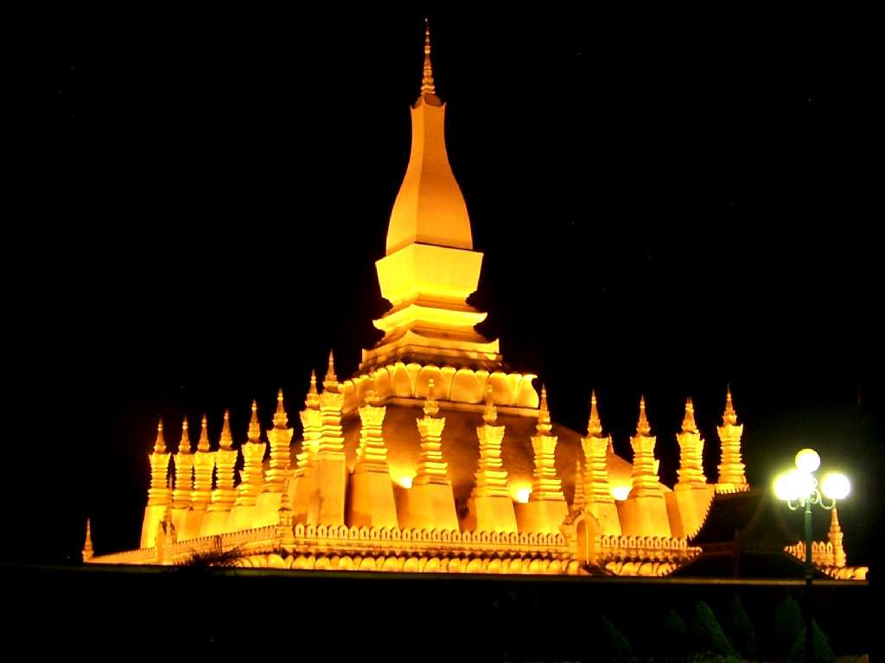
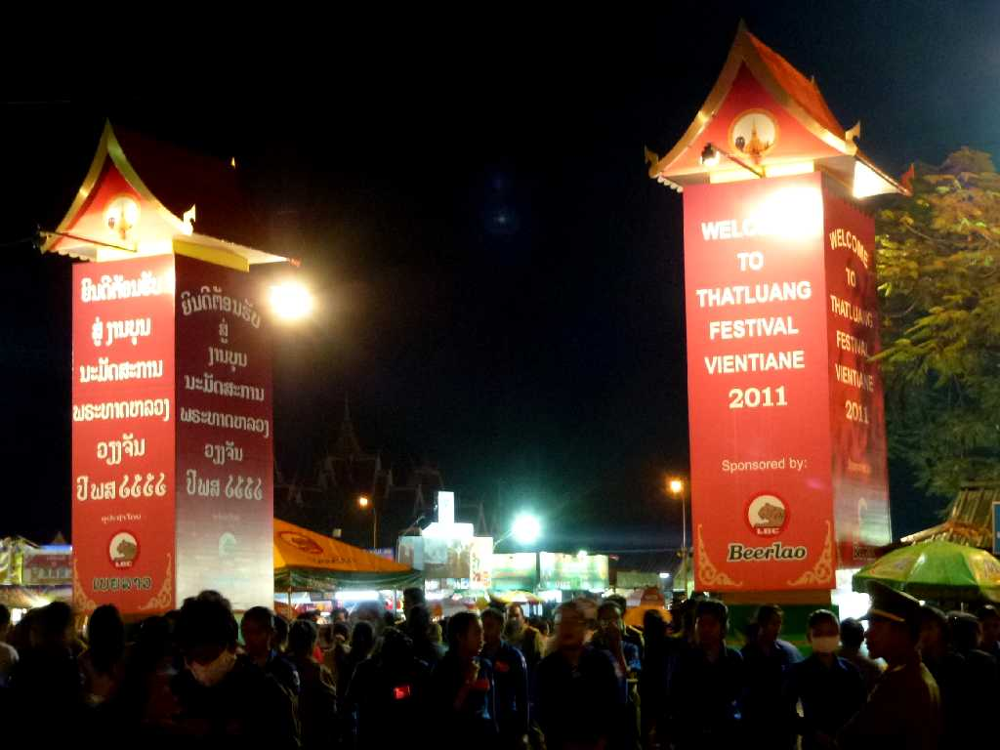
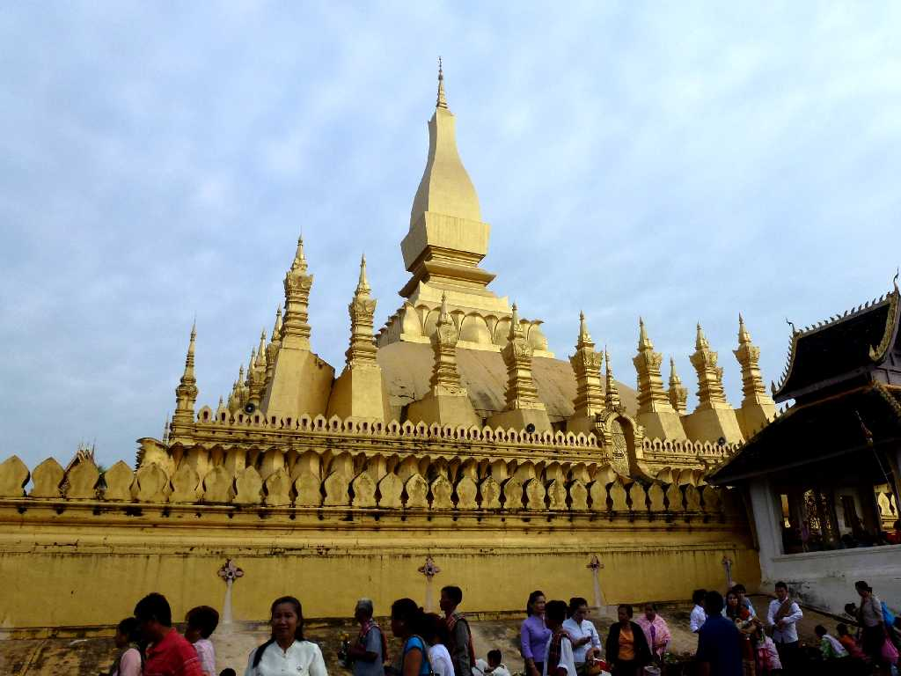
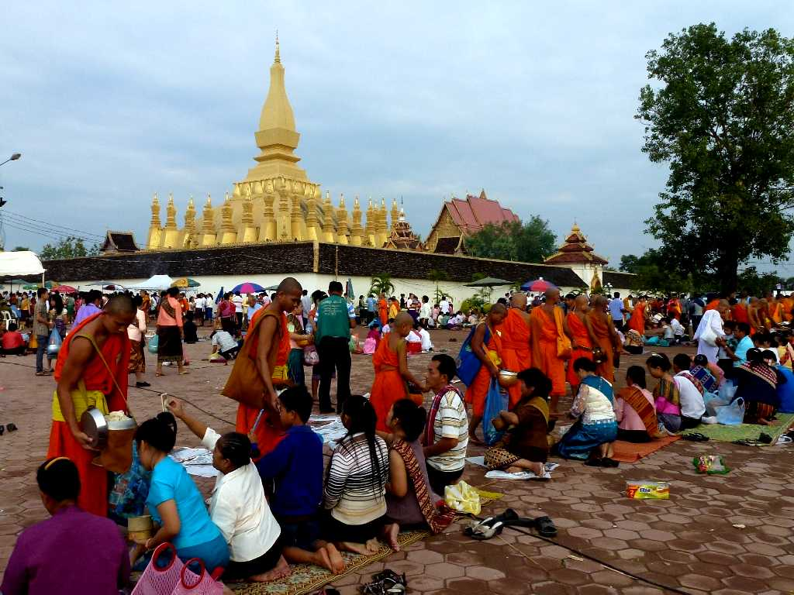

Night view Pha That Luang Vientiane Lao
３世紀にインドからもたらされた仏の胸骨を納めるために仏塔を創ったことが伝承されている

November 9 2011 That Luang Festival
ラオスを代表する仏塔タートルアン 前夜祭は現代的な音楽が流されていた

That Luang Festival 2011
１６世紀に１３世紀初頭に建てられたクメール時代の仏塔を改修し紀元前３世紀のインド寺院様式の仏塔を基に創られたもので仏陀の遺物が納められている

November 10 2011 That Luang Festival 2011
ラオス最大のお祭タートルアン祭で早朝の高僧によるお祈りの後ラオス全土から集結した僧侶に托鉢する人々